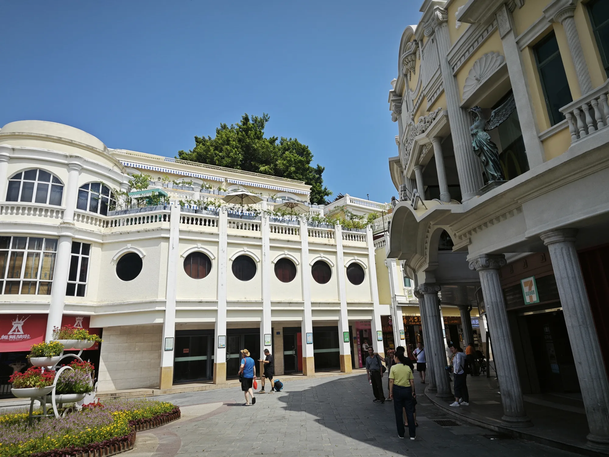

XIAMEN
厦门
集美学村、植物园与鼓浪屿，留下海边的清晨和落日。
2023.07.30 — 08.03铁路 · 旅行团包车 · 轮渡
放大地图查看照片
铁路 · 旅行团包车 · 轮渡轮渡铁路 / 轨道交通打车 / 包车 / 团体巴士
公共交通按线路或途经站点绘制，均为行程示意；未记下的具体班次留空。航班连线非实际飞行轨迹。
每日记录 5 天
DAY 01
上海 · 厦门
铁路、旅行团包车乘列车来到厦门，沿途看海湾与城市。
→→
DAY 02
海湾沿岸 · 集美学村
旅行团包车走过海湾步道，再到集美学村与校园周边。
→
DAY 03
植物园 · 鼓浪屿
旅行团包车、轮渡、步行上午看植物园里的热带植物，午后走过鼓浪屿的街巷与海边。
→
DAY 04
黄厝日出 · 海滨
旅行团包车、出海清晨到黄厝海滩看日出，白天参加海上活动，傍晚继续在海边散步。
→
DAY 05
厦门返程
旅行团包车、铁路午后离开厦门，乘列车返回上海。
→
进城途中经过海湾07.30 · 16:59 厦门进城途中绿树围绕的城市水面07.31 · 13:14 厦门海湾沿岸海滨步道与远处的厦门07.31 · 13:41 厦门海湾沿岸集美海岸边的绿地07.31 · 14:57 集美学村集美校园的红瓦与石墙07.31 · 16:13 集美学村植物园里的仙人掌与多肉植物08.01 · 09:52 厦门园林植物园热带植物掩映的园林步道08.01 · 10:49 厦门园林植物园鼓浪屿的街角建筑08.01 · 14:22 鼓浪屿绿树间的砖墙与老建筑08.01 · 15:01 鼓浪屿海面上的一线日光08.01 · 17:38 鼓浪屿黄厝海滩的清晨08.02 · 05:58 黄厝海滩日出时分的沙滩与海面08.02 · 06:10 黄厝海滩海边夜幕中的月亮08.02 · 19:53 环岛路海滨返程列车窗外的暮色08.03 · 18:44 返程列车沿途 暂无照片。